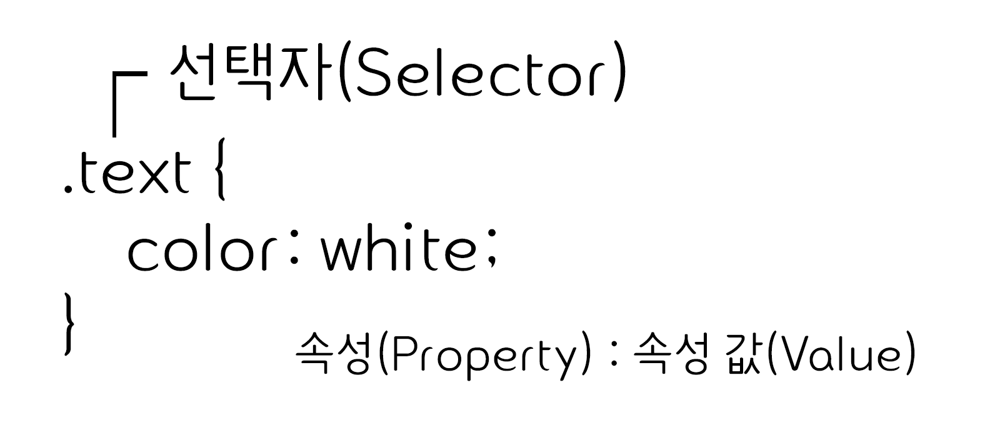

CSS
CSS는 HTML로 작성된 문서를 쓰기 위한 스타일 시트 언어입니다.
HTML이 문서의 골격을 이룬다면, CSS는 그 골격에 맞는 디자인 작업 언어라고 생각하면 됩니다.
CSS선택자(selector)
CSS 선택자를 통해 요소를 선택하고 속성을 줄 수 있습니다.
id 선택자와 class선택자
- id 선택자
- 하나의 태그만 식별하기 위한 선택자입니다.
- 하나의 태그에서 하나만 사용할 수 있습니다.
'#'으로 표시합니다
- class 선택자
- 여러개의 태그를 식별하기 위한 선택자입니다.
- 하나의 태그에서 여러개를 사용할 수 있습니다.
'.'으로 표시합니다
기본 선택자
| 종류 | 예시 | 이름 |
|---|---|---|
| 태그 선택자 | p {color:#fff;} | p 태그를 선택하여 글씨 색을 하얀색으로 변경합니다. |
| 클래스 선택자 | .class {color:#fff;} | class 클래스를 선택하여 글씨 색을 하얀색으로 변경합니다. |
| 아이디 선택자 | #id {color:#fff;} | id 아이드를 선택하여 글씨 색을 하얀색으로 변경합니다. |
| 그룹 선택자 | p, div {color:#fff;} | p 태그와 div 태그를 선택하여 글씨 색을 하얀색으로 변경합니다. |
| 전체 선택자 | * {color:#fff;} | 전체 태그를 선택하여 글씨 색을 하얀색으로 변경합니다. |
계층 선택자
| 종류 | 예시 | 이름 |
|---|---|---|
| 하위 선택자(Descendant Selector) | div p {color:#fff;} | div 태그의 모든 자식 중 p 태그를 모두 선택하여 글씨 색을 하얀색으로 변경합니다. |
| 자식 선택자(Child Selector) | div > p {color:#fff;} | div 태그의 모든 자식 중 첫번째 자식 p 태그를 선택하여 글씨 색을 하얀색으로 변경합니다. |
| 형제 선택자(sibling Selector) | div ~ p {color:#fff;} | div 태그의 인접한 형제 p 태그를 모두 선택하여 글씨 색을 하얀색으로 변경합니다. |
| 인접 형제 선택자(Adjacent Sibling Selector) | div + p {color:#fff;} | div 태그의 인접한 형제 첫번째 p 태그를 선택하여 글씨 색을 하얀색으로 변경합니다. |
속성 선택자
| 종류 | 예시 | 이름 |
|---|---|---|
| [name] | a[href] | a 태그 속성 중에 href가 있으면 선택합니다. |
| [name="value"] | a[href="#header"] | a 태그 href 속성의 값이 '#header'이면 선택합니다. |
| [name~="value"] | a[href~="web"] | a 태그 href 속성의 값이 'web'을 포함한 요소를 선택합니다. |
| [name|="value"] | a[href|="web"] | a 태그 href 속성의 값이 'web'이거나 'web'으로 시작하는 요소를 선택합니다. |
| [name^="value"] | a[href^="web"] | a 태그 href 속성의 값이 'web'으로 시작하는 태그를 선택합니다. |
| [name*="value"] | a[href*="web"] | a 태그 href 속성의 값이 'web'이 포함되어 있는 태그를 선택합니다. |
| [name$="value"] | a[href$="com"] | a 태그 href 속성의 값이 'com'으로 끝나는 태그를 선택합니다. |
가상 요소
| 종류 | 예시 | 이름 |
|---|---|---|
| ::first-line | p:first-line {color:#fff;} | 문단의 첫 줄에 컬러색을 하얀색으로 변경합니다. |
| ::first-letter | p:first-letter {color:#fff;} | 문단의 첫 글자에 컬러색을 하얀색으로 변경합니다. |
| ::before | p:before {content:"시작"} | 문단 시작 부분에 '시작'이라는 요소를 추가합니다. |
| ::after | p:after {content:"끝"} | 문단 끝 부분에 '끝'이라는 요소를 추가합니다. |
| ::selection | p:selection {color:#fff;} | 드래그로 선택하였을 경우 글씨 색을 하얀색으로 변경합니다. |
가상 클래스
| 종류 | 예시 | 이름 | |
|---|---|---|---|
| :first-child | li:first-line {color:#fff;} | li 자식 요소 중 첫 번째 자식 요소에게 컬러를 하얀색으로 변경합니다. | |
| :last-child | li:last-line {color:#fff;} | li 자식 요소 중 마지막 번째 자식 요소에게 컬러를 하얀색으로 변경합니다. | |
| :first-of-type | p:first-of-type {color:#fff;} | 자식 요소 중 p 태그 첫 번째 자식 요소에게 컬러를 하얀색으로 변경합니다. | |
| :last-of-type | p:last-of-type {color:#fff;} | 자식 요소 중 p 태그 마지막 번째 자식 요소에게 컬러를 하얀색으로 변경합니다. | |
| :nth-child() | li:nth-child(2) {color:#fff;} | li 자식 요소 중 2번째 자식 요소에게 컬러를 하얀색으로 변경합니다. | |
| :nth-last-child() | li:nth-last-child(2) {color:#fff;} | li 자식 요소 중 뒤에서 2번째 자식 요소에게 컬러를 하얀색으로 변경합니다. | |
| :nth-of-type() | p:nth-of-type(2) {color:#fff;} | 자식 요소 중 p 태그 2번째 자식 요소에게 컬러를 하얀색으로 변경합니다. | |
| :nth-last-of-type() | p:nth-last-of-type(2) {color:#fff;} | 자식 요소 중 p 태그 뒤에서 2번째 자식 요소에게 컬러를 하얀색으로 변경합니다. | |
| :only-child | :only-child {color:#fff;} | 자식 요소 중 유일한 태그 자식 요소에게 컬러를 하얀색으로 변경합니다. | CSS3 |
| :only-of-type | p:only-of-type {color:#fff;} | 자식 요소 중 유일한 p 태그 자식 요소에게 컬러를 하얀색으로 변경합니다. | CSS3 |
| :not() | li:not(:nth-child(2)) {color:#fff;} | li 자식 요소 중 2번째 자식 요소를 제외하고 컬러를 하얀색으로 변경합니다. | |
| :root | :root {color:#fff;} | 기본 루트 요소의 컬러를 하얀색으로 변경합니다. | |
| :empty | :empty {color:#fff;} | 컨텐츠 요소가 없는 요소의 컬러를 하얀색으로 변경합니다. |
링크 가상클래스
| 종류 | 예시 | 이름 |
|---|---|---|
| :link | a:link {color:#fff;} | 방문하지 않는 링크의 글씨 색을 하얀색으로 설정합니다. |
| :visited | a:visited {color:#fff;} | 방문한 링크의 글씨 색을 하얀색으로 설정합니다. |
| :hover | a:hover {color:#fff;} | 링크 위에 마우스를 올려 놓았을 경우 글씨 색을 하얀색으로 설정합니다. |
| :active | a:active {color:#fff;} | 링크가 활성화되었을 경우 글씨 색을 하얀색으로 변경합니다. |
폼 관련 선택자
| 종류 | 예시 | 이름 |
|---|---|---|
| :checked | input:checked {color:#fff;} | input 태그가 체크되었을 때 글씨 색을 하얀색으로 변경합니다. |
| :focus | input:link {color:#fff;} | input 태그에 초점이 맞추어졌을 때 글씨 색을 하얀색으로 변경합니다. |
| :enabled | input:enabled {color:#fff;} | input 태그가 사용 가능하면 글씨 색을 하얀색으로 변경합니다. |
| :disabled | input:disabled {color:#fff;} | input 태그가 사용 가능하지 않으면 글씨 색을 하얀색으로 변경합니다. |
CSS속성(property)
속성의 종류로는 박스, 텍스트 꾸미기, 색상, 배경, 여백, 테두리, 페이지 레이아웃, 정렬 등이 있습니다.
속성명 바로 뒤에 콜론(:) 을 붙인 후 그 값을 적습니다.
CSS속성 값(value)
속성 값은 수치 지정방식과 키워드 지정방식으로 나뉩니다.
속성값이 여러개일 경우 단축형으로 표현할 수 있습니다.
CSS색상
css에서 색상은 주로 hexa값으로 설정합니다.
RGB모드
RGB Color모드는 빛의 삼원색인 '빨강(Red)', '초록(Green)', '파랑(Blue)'을 섞어 색을 만듭니다. 색을 섞을수록 점점 밝아지므로 '가산 혼합'이라고 부릅니다. 모니터 화면용 작업(프레젠테이션, 웹디자인 등)에서 기본적으로 사용하는 색상 모드입니다.
CMYK모드
CMYK Color모드는 '시안(Cyan)', '마젠타(Magenta)','노랑(Yellow)','검정(Black)'의 원색을 섞어서 색상을 만듭니다. 물감처럼 색을 섞을수록 점점 어두워지므로 '감산 혼합'이라고 부릅니다. 출력용 이미지르르 작업할 때는 CMYK색상 모드에서 작업합니다.
16진수 표기법
웹 문서에서 색상은 16진수로 표현합니다. 두자리씩 묶어서 #RRGGBB형식으로 표현하며, RR은 빨강, GG는 초록, BB는 파란색의 양을 표현합니다. 각 색상이 전혀 섞이지 않은 00부터 가득 섞여 있는 FF까지 사용할 수 있습니다.
- 색상코드를 지정할 수 있는 16진수(헥사)코드 값은 #과 6자리수로 이루어져있습니다.(참고- https://materializecss.com/color.html)
- 헥사코드: RR(red), GG(green), BB(blue)로 각각 두자리 정수로 구성되어 있습니다. 헥사코드는 16진수 값을 나타내는 00~FF 사이의 값으로 설정할 수 있습니다.
색상이름 표기법
색상 이름을 이용하여 색을 표현할 수 있습니다. 가장 기본적인 16가지를 포함하여 216가지의 색상 이름 표기법이 있습니다.
RGB와 RGBA표기법
웹 문서에서 색상을 표현하는 RGB(255,255,255)는 십진수를 이용하여 표현합니다. 색이 전혀 섞이지 않았을 때에는 0으로 표시하고, 가득 섞였을 때는 255로 표현합니다. 숫자는 색상을 양을 나타내고 a는 투명도(Alpha)를 나타냅니다. 투명도는 0과 1사이로 표현합니다.
HSL과 HSLA표기법
웹 문서에서 색상을 표현하는 HSL은 색상(HUE), 채도(saturation), 밝기(lightness)를 나타냅니다. 색상은 둥글게 배치한 색상환으로 표시하고 0과 360도에는 빨간색, 120도에는 초록색, 240도에는 파란색이 배치됩니다. 채도가 0%이면 회색톤, 100%이면 순색으로 표시됩니다. 밝기는 0%에서 가장 어둡고 100%에서 가장 밝습니다.
CSS선언
HTML 문서에 스타일을 선언하는 방법은 3가지가 있습니다.
css는 선택자, 선언구간의 시작과 끝({}), 속성, 값으로 구성되어 있는 구문입니다. 선언문은 속성, 값으로 이루어진 짝을 말하며 속성, 값을 구분할 대는 콜론(:)을 사용하고 선언문끼리 구분할 때는 세미콜론(;)을 사용합니다.
- 내부 스타일(Internal Style Sheet): head태그 내부에 작성하는 방법. body태그 내부에서 사용하지 않아야 함.
- 외부 스타일(External Style Sheet): 외부 파일로 연결하는 방법
- 인라인 스타일(Inline Style Sheet): 태그에 직접 연결하는 방법. 한 라인으로 요소 내부에 스타일 속성을 이용하여 작성
<!DOCTYPE html>
<html lang="en">
<head>
<meta charset="UTF-8">
<title>Document</title>
<!-- 내부 스타일 -->
<style>
h1 {color: #fff;}
</style>
<!-- 외부 스타일 -->
<link rel="stylesheet" href="경로">
</head>
<body>
<!-- 인라인 스타일 -->
<h1 style="color: #fff"></h1>
</body>
</html>
상대주소 절대주소
한 예로, 웹 사이트를 제작할 때에는 일반적으로 HTML파일과 그림 파일을 따로 보관하는데 그림 파일의 경로를 입력하는 방식에 따라 절대주소와 상대주소로 나뉩니다.
- 절대주소: 웹사이트나 파일이 가지고 있는 고유한 경로로, 절대적으로 변하지 않는 경로
img src="http://"http://가 포함되어 있는 웹브라우저 주소로 연결img src="C:\Users\603-18\OneDrive\webs\coding\html\site-webstandard\img\header_bg.jpg"로컬디스크(C:)에서 603-18->원드라이브->webs->coding->html->site-webstandard->img 폴더에 있는 header_bg.jpg파일 연결- 다른 웹사이트에 있는 그림을 내 웹사이트에 연결할 때 주로 사용합니다.
- 상대주소: '내 위치 기준'에서 사용하는 경로
img scr="1.jpg"현재 html파일과 같은 폴더에 있는 이미지 파일1을 연결img scr="img/1.jpg"현재 html파일이 있는 폴더를 기준으로 하위 폴더img에 있는 이미지 파일1을 연결img scr="../img/1.jpg"현재 html파일이 있는 폴더를 기준으로 상위 폴더img에 있는 이미지 파일1을 연결
이미지 표현방법
웹 문서에 이미지를 표현하는 방법은 html의 img태그와 css의 background를 통해 할 수 있습니다.
- html 태그 img로 표현하는 방법: 이미지에 의미가 있는 경우(로고, 배너)
- css 속성 background로 표현하는 방법: 이미지에 의미가 없는 경우(배경 장식)
img 태그로 이미지 표현하기


속성 background로 이미지 표현하기(속성 alt 못 씀, 대체 문자 표현 불가)
이미지 스프라이트를 이용한 이미지 표현하기(속성 alt 못 씀, 대체 문자 표현 불가)
이미지 스프라이트
아이콘 또는 장식을 위한 이미지 요소들은 스프라이트 기법을 활용하여 파일의 사이즈를 최소화하고 표율성을 높일 수 있습니다.
- 여러번의 서버 요청을 한번으로 줄일 수 있음
- 이미지 수정이나 관리가 간편함
- 웹 접근성을 준수하기 위해서는 IR효과를 설정해야 함
IR 효과
IR(Image Replacment)효과는 이미지 대체 텍스트를 제공하기 위한 css 기법입니다.
Phark Method
의미 있는 이미지의 대체 텍스트를 제공하는 경우: 이미지로 대체할 요소에 배경이미지를 설정하고 글자는 text-indent를 이용하여 화면 바깥으로 빼내어 보이지 않게 함
PWA IR
의미 있는 이미지의 대체 텍스트로 이미지를 off시에도 대체 텍스트를 보여주고자 하는 경우: 이미지로 대체할 요소에 배경 이미지를 설정하고 글자는 span으로 감싼 후 z-index: -1을 이용하여 화면에 안보이게 함
Screen Out
대체 텍스트가 아닌 접근성을 위한 숨김 텍스트를 제공하고자 하는 경우 사용
float
속성 float은 이미지를 텍스트와 어떻게 배치할지를 설정합니다.
float: left;왼쪽에 부유하는 블록 박스를 생성하고 페이지 내용은 박스 오른쪽에 위치하도록 함float: right;오른쪽에 부유하는 블록 박스를 생성하고 페이지 내용은 박스 왼쪽에 위치하도록 함
float으로 인한 깨짐 현상
float을 쓰게 되면 영역의 높이 값이 0으로 줄어들기 때문에 영역을 유지하는 방법이 필요합니다.
- 깨지는 영역에 똑같이
float: left를 사용합니다. but> 모든 영역에 float을 사용하는 한편, 레이아웃이 복잡하면 정확히 어디가 깨지는지 알기 어려워짐. - float의 성질을 차단하는
clear: both를 사용합니다. but> 레이아웃이 복잡해지면 어디가 깨지는지 알기 어려워짐. float을 사용한 부모 박스 영역에overflow: hidden을 사용함
clear
속성 clear는 이전 부유 박스와 인접하지 말아야 할 요소 박스 측면을 설정합니다.
clear: both;생성된 박스 전부를 이전 부유 요소 아래로 배치함
컨텐츠 요소를 보이지 않게 하는 방법
컨텐츠 요소를 보이지 않게 하는 방법은 displayopacityvisibility등이 있습니다.
| 종류 | 반대 | 영역 | 애니메이션 |
|---|---|---|---|
| display: none; | display: block |
영역 사라짐 | |
| visibility: hidden; | visibility: visible |
영역 유지 | |
| opacity: 0; | |
GIF, JPG, PNG, SVG
프로젝트 종류에 따라 여러가지 이미지 타입을 사용할 수 있습니다.
- GIF: GIF 는 이미지를 저장해도 데이터가 손실 되지 않는 무손실 압축을 사용합니다. 파일 사이즈는 BMP보다 적은데, 좋은 압축 알고리즘을 사용하기 때문입니다. 하지만 Indexed color 속성을 가지고 있어서 최대 256가지의 컬러로만 저장 할 수 있습니다.
- JPG: JPEG 이미지는 인간의 눈으로 확인 할 수 없는 정보를 제거하는 방법으로 디테일한 사진 이미지를 가능한한 작게 만들도록 디자인 되었습니다. 이런 이유 때문에 손실 압축이고, 같은 파일을 JPEG로 변환하여 저장할 수록 시간이 지남에 따라 데이터를 손실하는 결과가 나오게 됩니다. 수천가지의 Color Palette를 가지고 있어서 사진 이미지에 적합하고 로고나 라인 그리기에는 부족합니다. 그라데이션이 표현된 이미지가 있다고 가정하면 GIF 타입 보다 JPEG 타입으로 된 이미지가 더 적은 파일 사이즈와 좋은 퀄리티를 가지고 있습니다. 사진이나 그라데이션이 표현된 이미지에 적합합니다
- PNG-8: GIF같이 에니메이션을 지원하지 않는점입니다.(파이어폭스에서는 지원되는 데, 거의 모든 브라우저에서 해당 포맷의 에니메이션이 지원되지 않습니다.) 두번째는 IE6같은 오래된 브라우저에서 지원 문제가 있습니다. 세번째는, 포토샵같은 중요한 소프트웨어에서 이 포맷을 구현하기가 어렵다는 점입니다. PNG-8은 GIF와 같이 256 색상으로만 저장이 되고, PNG-8이 GIF보다 더 나은 점은 Alpha Transparency를 지원하는 점
- PNG-24: JPEG처럼 수천가지의 컬러를 가지면서 무손실 압축인 훌륭한 포맷입니다. 이미지를 압축하는 면을 제외하면 BMP와 유사한데, 파일을 좀 더 작게 만드는 것입니다. 하지만, JPEG ,GIF,PNG-8보다 파일사이즈가 커서 이 포맷을 사용하길 원한다면 좀 더 고려해봐야 할 것. 물론 파일사이즈 염두해 두지 않고, 퀄리티 좋은 이미지를 원한다면 제격입니다. 보통 회사 서비스에서는 간단한 배너이미지에 이 이미지 포맷을 씁니다
- SVG: 앞에서 설명한 이미지 타입과는 다른 vector 파일 포맷입니다. Retina screens 이나 사이즈가 변경되어도 모양을 유지 하고 싶을때, 즉 로고나 아이콘에 알맛습니다. 또한 작은 SVG 로고를 훨씬 더 큰 크기로 사용할 수 있는데요, 래스터 이미지같은 경우에는 이를 위해 별도의 파일이 필요합니다.
| 종류 | PC Web | Mobile Web | Mobile App | 투명효과 | 애니메이션 | 용량 | |
|---|---|---|---|---|---|---|---|
| GIF | O(기본) | O | X | △ | O | 작음 | |
| JPG | O(컬러수가 많을 때) | O(운영성 이미지일 때)) | X | X | X | X | 중간 |
| PNG-8 | X | O(기본) | △(반투명 효과가 없고 컬러가 적을 때) | △ | X | X | 작음 |
| PNG-24 | △(반투명 효과가 있을 때) | O(컬러가 많거나 반투명 효과가 있을 때) | O(기본) | O | X | X | 큼 |
| SVG | O | O | O | O | O | O | 작음 |
@media
미디어 쿼리를 사용하면 콘텐츠(content)를 별도로 변경하지 않아도 웹 페이지에 접속하고 있는 기기에 알맞은 형태로 스타일이 조정됩니다.
- CSS2
- @media 규칙을 통해 서로 다른 매체 유형(media type)을 위한 맞춤식 스타일 시트(style sheet)를 지원
- HTML 문서가 스크린에 표현될 때와 프린트할 때 서로 다른 스타일을 적용할 수 있d음
- CSS3
- @media 규칙을 더욱 발전시켜 매체 유형(media type)과 하나 이상의 표현식(expression)으로 구성된 미디어 쿼리(media query)를 사용할 수 있음
- 미디어 쿼리(media query)는 width, height, color 속성과 같은 미디어 관련 속성을 이용한 표현식을 통해 스타일이 적용되는 범위를 조절할 수 있음
margin
속성 margin은 요소의 바깥쪽 여백을 설정합니다.
margin-top: 10px;요소의 위쪽 바깥 여백을 설정margin-right: 11px;요소의 오른쪽 바깥 여백을 설정margin-bottom: 12px;요소의 아래쪽 바깥 여백을 설정margin-left: 13px;요소의 왼쪽 바깥 여백을 설정margin: 10px 11px 12px 13px;요소의 위쪽/오른쪽/아래쪽/왼쪽 바깥 여백을 설정margin: 10px 11px 12px;요소의 위쪽(10px)/왼쪽 오른쪽(11px)/아래쪽(12px)margin: 10px 11px;요소의 위쪽 아래쪽(10px)/오른쪽 왼쪽(11px)margin: 10px;요소의 위쪽/오른쪽/아래쪽/왼쪽(10px)margin: auto;자동값 또는 기본값 또는 초기값margin: 0 auto;블록 구조를 가운데 정렬할 때 사용
padding
속성 padding은 요소의 안쪽 여백을 설정합니다.
padding-top: 10px;요소의 위쪽 내부 여백을 설정padding-right: 11px;요소의 오른쪽 내부 여백을 설정padding-bottom: 12px;요소의 아래쪽 내부 여백을 설정padding-left: 13px;요소의 왼쪽 내부 여백을 설정padding: 10px 11px 12px 13px;요소의 위쪽/오른쪽/아래쪽/왼쪽 내부 여백을 설정padding: 10px 11px 12px요소의 위쪽(10px)/왼쪽 오른쪽(11px)/아래쪽(12px)padding: 10px 11px요소의 위쪽 아래쪽(10px)/오른쪽 왼쪽(11px)padding: 10px요소의 위쪽/오른쪽/아래쪽/왼쪽(10px)
width
속성 witdth는 요소의 가로 값을 설정합니다.
width: 10px;width: auto;자동값 또는 초기값
height
속성 height은 요소의 세로 값을 설정합니다.
height: 10px;height: auto;자동값 또는 초기값
text-align
속성 text-align은 요소의 세로 값을 설정합니다.
text-align: left;왼쪽 정렬text-align: right;오른쪽 정렬text-align: center;가운데 정렬text-align: justify;양쪽 정렬
font
속성 font는 폰트의 속성을 설정합니다.
- font
- font-family
- font-size
font-size: 10px;글씨 크기 10픽셀(fz10px+tab)
- font-size-adjust
- font-size-stretch
- font-size-style
- font-size-variant
- font-weight
- @font-face
line-height
속성 line-height는 줄간격을 설정합니다.
line-height: 10px;줄간격 10픽셀
text-transform
속성 text-transform은 텍스트의 대/소문자를 설정합니다.
text-transform: capitalize;단어의 첫번째 글자를 대문자로 설정text-transform: uppercase;모든 글자를 대문자로 설정text-transform: lowercase;모든 글자를 소문자로 설정
background-color
속성 background-color는 배경색을 설정합니다.
background-color: #fff;배경색을 헥사코드#fff에 해당하는 색으로 바꿈(=bcgfff+tab)background-color: rgba(0,0,0,0.1)배경색 r은 0, g는 0, b는 0, 투명도는 0.1로 설정
text-decoration
글자에 줄을 그을 때 사용합니다.
text-decoration: line-underline;글자 아래에 줄 그음text-decoration: line-through;글자 위에 줄 그음text-decoration: line-through;글자 중간에 줄 그음text-decoration: none;a 태그는 기본적으로 text-decoration속성이 line-underline;속성값을 갖도록 설정되어 있는데 속성값을 none으로 설정해서 글자만 나타나도록 할 수 있음
background
속성 background는 배경 이미지 속성 값을 설정합니다.
- background-attachment: 배경 이미지 고정여부를 설정합니다
background-attachment: scrollbackground-attachment: fixedbackground-attachment: local
- background-blend-mode: 배경을 혼합했을 때의 상태를 설정합니다.
background-blend-mode: normalbackground-blend-mode: multiplybackground-blend-mode: screenbackground-blend-mode: overlaybackground-blend-mode: darkenbackground-blend-mode: lightenbackground-blend-mode: color-dodgebackground-blend-mode: saturationbackground-blend-mode: colorbackground-blend-mode: saturation
- background-clip: 배경 이미지 영역 속성을 설정합니다.
background-clip: border-boxbackground-clip: padding-boxbackground-clip: content-box
- background-color: 배경 색상을 설정합니다.
background-color: color값background-color: transparent
- background-image: 배경 이미지를 설정합니다.
background-image: url()background-image: none
- background-origin: 배경의 방향을 설정합니다.
background-origin: border-boxbackground-origin: padding-boxbackground-origin: content-box
- background-position: 배경의 위치를 설정합니다.
background-position: a% b%x축 기준 a%, y축 기준 b%에 위치background-position: 10px 10pxx축으로 10px이동, y축으로 10px이동background-position: top | right | bottom | leftbackground-position: left top | left center | left bottom | right top | right center | right bottom | center top | center center | center bottom
- background-repeat: 배경의 반복 여부를 설정합니다.
background-repeat: repeat;기본값(x축, y축 반복)background-repeat: repeat-x;이미지가 x축으로 반복background-repeat: repeat-y;이미지가 y축으로 반복background-repeat: no-repeat;이미지를 하나만 나오게 설정
- background-size: 배경의 사이즈를 설정합니다.
background-size: auto;background-size: contain;background-size: cover;background-size: percentage;background-size: length;
border
속성 border은 테두리를 설정합니다.
border-colorborder-top-colorborder-right-colorborder-bottom-colorborder-left-color
border-widthborder-top-widthborder-right-widthborder-bottom-widthborder-left-width
border-styleborder-top-styleborder-right-styleborder-bottom-styleborder-left-style
border-imageborder-image-outsetborder-image-repeatborder-image-sliceborder-image-sourceborder-image-width
border-radiusborder-top-left-radiusborder-top-right-radiusborder-bottom-left-radiusborder-bottom-right-radius
position
속성 position은 레이아웃이나 객체를 위치시킬 때 사용합니다.
position: static;초기값. static 속성 값으로 설정하면 웹 브라우저에서 자연스럽게 해당 요소의 위치를 결정해줌.position: relative; top:; right:; bottom:; left:;해당 요소가 'static이었을 때 배치되는 위치를 기준'으로 상대적 위치를 설정할 수 있음. top, right, bottom, left 속성을 사용해 위치 조절을 할 수 있음position: absolute;웹 브라우저 내의 흐름과 상관없이 요소의 위치를 조절할 수 있음. 기준점이 웹브라우저 왼쪽 상단 또는 가장 가까운 부모요소 중 속성이 positive: relative인 것position: fixed;웹 브라우저 내의 흐름과 상관없이 요소의 위치를 조절할 수 있음. 기준점이 웹브라우저 왼쪽 상단으로 고정
display
속성 display는 웹 페이지 상에서 요소들이 어떻게 다른 요소들과 상호 배치되는지를 결정합니다.
display: inline;- 해당요소는 한 줄에 다른 요소들과 나란이 배치됨
- 속성 width와 height을 지정해도 무시됨
- 속성 margin과 padding은 오른쪽, 왼쪽 간격만 반영되고 위쪽, 아래쪽 간격은 반영되지 않음
<span><a>emimgstrong
display: block;- 해당 요소는 한 줄을 모두 차지하고 다른 요소들은 다음 줄로 밀려남.
- 속성 width, height, margin, padding 모두 반영됨
blockdivph1-h6
display: inline-block;- 해당요소는 한 줄에 다른 요소들과 나란이 배치됨
- 속성 width, height, margin, padding 모두 반영됨
buttonselect
display: none;- 해당요소를 보이게 하지 않음
display: -브라우저 태그-box;
속성 display: -브라우저 태그-box;는 블록요소에서 float 대신 사용할 수 있습니다. 또한 블록을 수직, 수평으로 배치하거나 역순으로 배열하거나 임의로 배치 순서를 바꿔줄 수도 있습니다. 반응형 웹을 위한 구성에는 단순히 float를 사용하는 것보다 많은 장점들이 있기 때문에 많이 사용하는 속성입니다. 특히 iOS나 안드로이드 같은 모바일 환경에서 지원되고 있기 때문에 모바일 웹 사이트를 제작할 때 유용합니다.
각 브라우저별 태그 지정 방법
- IE : -ms-
- Firefox : -moz-
- Safari, Chrome : -webkit-
- Opera: -o-
line-clamp
속성 line-clamp는 블록요소의 콘텐츠를 지정한 줄 수만큼으로 제한합니다.
display 속성을 -webkit-box 또는 -webkit-inline-box로 설정하고, -webkit-box-orient 속성을 vertical로 설정한 경우에만 동작합니다.
-webkit-line-clamp만 사용하는 경우, 말줄임표는 노출되나 넘친 콘텐츠가 숨겨지지 않으므로 대개 overflow: hidden;을 추가로 설정해야 합니다.
- 원하는 줄에서 말줄임표 나타내기
- 속성 설정:
text-overflow: ellipsis; overflow: hidden;
display: -webkit-box; -webkit-box-orient: vertical; -webkit-line-clamp: 2; (지정한 n번째 줄에서 말줄임표 나타남!) max-height: 36px; (li요소 속성으로 지성하면 li요소 높이)
white-space: pre-line;속성과의 차이점: 속성을text-overflow: ellipsis; overflow: hidden; white-space: pre-line;으로 설정 -> 해당 요소에 높이가 따로 설정되어 있지 않으면 요소의 너비를 초과할 때 줄바꿈하고 요소 내용에 말줄임표가 안 나타남.
box-orient
속성 box-orient는 박스의 흐르는 방향을 지정합니다.
box-orient: horizontal;: 가로로 지정box-orient: vertical;: 세로로 지정box-orient: inline-axis;: 인라인축으로 지정(수평방향)box-orient: block-axis;: 블럭축으로 지정(수직방향)
text-indent
속성 text-indent는 텍스트의 들여쓰기를 설정할 때 사용합니다.
text-indent: -9999px;텍스트를 안 보이게 할 경우에도 사용함. 속성 display의 값을 none으로 준 것 같은 효과를 줌. 속성 background 이미지의 경우 img태그 이미지와 달리 속성 alt가 없는데, 속성 alt를 지정한 것 같은 효과를 주는 셈
z-index
속성 z-index는 요소들의 위치가 겹칠 경우 순서를 정의합니다.
- 속성 z-index는 속성 position: relative|absolute|fixed가 적용된 요소에만 적용됨(position값이 설정되어 있지 않으면 z-index는 0임!)
- 속성 z-index는 같은 depth의 요소끼지 비교하는 것이 원칙임
- z-index의 기본 속성값은 auto임! z-index값이 auto로 설정된 요소는 z-index가 0으로 설정된 것처럼 작동함. 그리고 z-index 비교대상을 자식 요소에게 넘겨줌
vertical-align
속성 vertical-align은 텍스트의 상하 정렬 방식을 설정합니다.
- vertical-align은 오직 inline과 table-cell 엘리먼트에만 적용됨
vertical-align: baseline;기본값.vertical-align: middle;요소의 인라인박스의 수직 중앙 지점(콘텐츠 영역의 높이/2)을, 부모요소의 중앙 지점에 정렬vertical-align: text-top;요소의 인라인박스의 상단을, 부모요소 콘텐츠영역의 상단에 정렬vertical-align: text-bottom;요소의 인라인박스의 하단을, 부모요소 콘텐츠영역의 하단에 정렬vertical-align: top;요소의 인라인박스의 상단을, 라인박스의 상단에 정렬vertical-align: bottom;요소의 인라인박스의 하단을, 라인박스의 하단에 정렬vertical-align: sub;요소의 인라인박스의 baseline을 부모박스의 아래첨자의 적절한 위치로 내림vertical-align: super;요소의 인라인박스의 baseline을 부모박스의 윗첨자의 적절한 위치로 올림
white-space
속성 white-space는 HTML 요소 내의 여백을 설정합니다
white-space: normal;연속 공백은 하나의 공백으로 나타냄. 요소 내용이 컨테이너 밖으로 넘치는 경우 줄바꿈☆white-space: nowrap;연속 공백은 하나의 공백으로 나타냄. 요소 내용이 컨테이너 밖으로 넘치는 경우 넘치는 그대로 나타남white-space: pre;연속 공백을 그대로 나타냄. 요소 내용이 컨테이너 밖으로 넘치는 경우 넘치는 그대로 나타남white-space: pre-wrap;연속 공백을 그대로 나타냄. 요소 내용이 컨테이너 밖으로 넘치는 경우 줄바꿈white-space: pre-line;연속 공백은 하나의 공백으로 나타냄. 요소 내용이 컨테이너 밖으로 넘치는 경우 줄바꿈
| 속성 | 줄바꿈 | 연속공백 | enter |
|---|---|---|---|
| normal | O | X | X |
| nowrap | X | X | X |
| pre | X | O | O |
| pre-line | O | X | O |
| pre-wrap | O | O | O |
text-overflow
속성 text-overflow는 요소의 내용에 있는 문자열이 넘칠 때 그것을 어떻게 나타낼지를 설정합니다.
text-overflow: clip;문자열이 넘칠 경우 컨테이너 밖으로 보이는 부분은 잘려서 안 보임text-overflow: ellipsis;문자열이 넘칠 경우 말줄임표(...)를 표시text-overflow: string;문자열이 넘칠 경우 지정된 문자열을 나타냄
overflow
속성 overflow는 요소의 내용이 컨테이너의 크기에 비에 클 때 그것을 어떻게 나타낼지를 설정합니다.
overflow: visible;기본값임. 내용이 넘칠 경우 넘치는 그대로 나타남overflow: hidden;내용이 넘칠 경우 컨테이너 밖으로 보이는 부분은 잘려서 안 보임overflow: scroll;스크롤바 추가돼서 넘치는 내용도 볼 수 있음overflow: auto;내용의 크기에 따라 스크롤바 추가됨
visibility
속성 visibility은 요소를 보이지 않게 합니다.
visibility: visible;요소를 나타냄visibility: hidden;요소가 보이지 않음. 영역은 유지됨visibility: collapse;테이블 요소를 나타내지 않음
box-sizing
box-sizing: content-box;콘텐트 영역을 기준으로 크기를 정함box-sizing: border-box;테두리를 기준으로 크기를 정함- 속성 값 border-box는 해당 요소의 너비(width)와 높이(height)에 패딩(padding)과 테두리(border)의 크기를 포함시켜 따로 더해주지 않습니다.
- 일반적으로 요소의 너비 구하는 식: width + left padding + right padding + left border + right border + left margin + right margin
box-sizing: border-box;설정 시 너비 구하는 식: width + left margin + right margin
box-sizing: initial;기본값으로 설정함box-sizing: inherit;부모 요소의 속성값을 상속받음
cursor
속성cursor를 이용하면 해당 태그 위에 위치하는 마우스 커서의 모양을 바꿀 수 있습니다.
cursor: pointer;손가락 모양cursor: auto;자동cursor: default;기본 화살표cursor: wait;로딩
속성 cursor PLAY
상대 단위
- em
- 상위 요소의 폰트 사이즈를 기준으로 함
- html에 10px, 상위 요소 header에 20px 설정돼 있으면 header 설정값 기준임
font-size: 1em;상위요소 폰트 사이즈* 1
- rem
- 루트 요소의 폰트 사이즈를 기준으로 함
- html에 10px, 상위 요소 header에 20px 설정돼 있으면 html 설정값 기준임
font-size: 1rem;루트 요소 폰트 사이즈* 1
- vh
- viewport(브라우저 창의 크기)의 높이를 기준으로 함
height: 100vh;뷰포트의 높이* 100%
- vw
- viewport(브라우저 창의 크기)의 너비를 기준으로 함
width: 100vw뷰포트의 너비* 100%